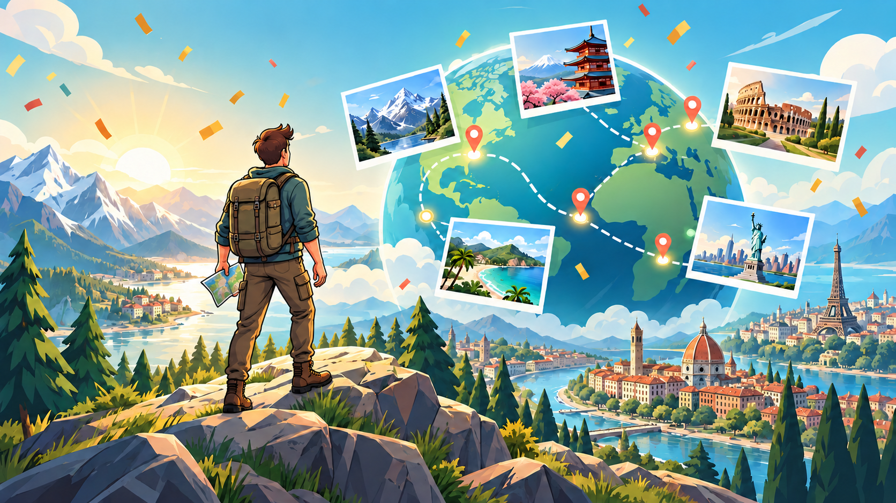

Biblioteka tras obejmuje trzydzieści przejazdów
WalkQuest obejmuje obecnie 303 przystanki miejskie oraz 18 przesiadek kolejowych, promowych i lotniczych na trasach z Kijowa i Kioto do Patagonii i Islandii.
Aktualizacje produktów, nowe miejsca docelowe, przewodniki po funkcjach i historie z rozwijającego się świata WalkQuest.

Ta strona będzie się powiększać o informacje o wydaniach, premiery tras i praktyczne wskazówki.

Osiągnięcia, postęp paszportu, trasy i rekordy dystansu można teraz udostępniać bez Premium.
Przeczytaj artykuł →WalkQuest obejmuje obecnie 303 przystanki miejskie oraz 18 przesiadek kolejowych, promowych i lotniczych na trasach z Kijowa i Kioto do Patagonii i Islandii.
Otwórz historie miast, zabytki, lokalną kuchnię, Mapy Google, pobliski Street View, pieczątki paszportowe i wspólne karty podróżne.
Pobierz WalkQuest i zamień dzisiejsze kroki w cel.